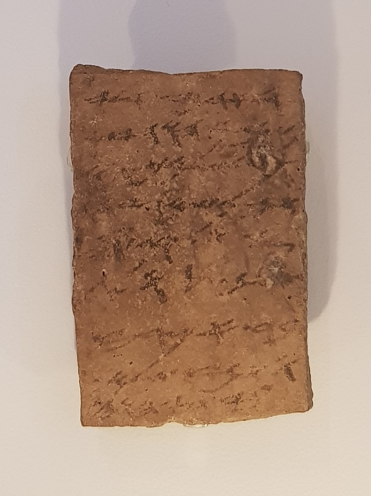

Arad Ostracon 18

- Find Name
- Arad Ostracon 18
- Description
- A Hebrew letter on a pottery sherd from Tel Arad, one of about 200 ostraca excavated there in 1962–1964, of which 107 are in ancient Hebrew dated to about 600 BCE (Stratum VI). Most are everyday military correspondence addressed to Eliashib, thought to be the fort's quartermaster, and this letter, addressed 'To my lord Eliashib, may Yahweh inquire after your well-being,' orders flour for Shemaryahu and for the Kerosite, then adds: 'And concerning the matter about which you commanded me, it is well. He is staying in the house of YHWH.' It is the most famous of the Arad ostraca and is now in the Israel Museum, Jerusalem. This is a specific item within the Arad site, distinct from the site's existing 'Arad Ostraca' and 'Arad Temple' entries.
- Historical Period
- Iron Age II
- Evidence Class
- Direct
- Interpretations
- Aharoni maintained the 'House of Yahweh' is the Temple in Jerusalem rather than the small shrine at Arad, because the Arad temple had already been decommissioned by Stratum VI, and the letter appears to reference a temple at the sender's location; the letter may also affirm the practice of seeking asylum in the Temple. That reading is widely accepted but not unanimous: some scholars note the phrase could in principle denote the Arad temple itself or another sanctuary, and one source states plainly that 'it is not clear whether this phrase refers to the local temple at Arad or to the central Temple in Jerusalem.' The entry follows Aharoni's Jerusalem reading while stating the caveat, and the letter does not name Jerusalem explicitly.
- Alternative Names
- House of Yahweh Ostracon
- Related Places
- Related Books
- Related Events
- Scripture Illuminated
- Biblical Significance
- It is one of the earliest references to the Jerusalem temple outside the Bible, written in the final years of Judah as the kingdom fell.
- Artifact Date
- c. 600 BCE (early 6th century BCE, Stratum VI)
- Current Location
- Israel Museum, Jerusalem
- Date Discovered
- 1962–1964
- Discovery Location
- Tel Arad
- Timeline Era
- Divided Monarchy
Awaiting Review Not yet checked against scholarly sources. Treat its claims as provisional until this entry is reviewed. About verification
Last reviewed: not yet reviewed